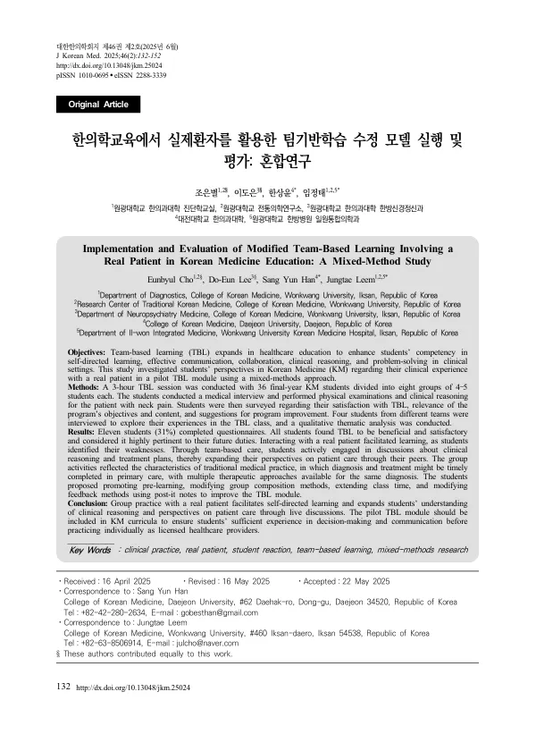

Implementation and Evaluation of Modified Team-Based Learning Involving a Real Patient in Korean Medicine Education: A Mixed-Method Study
Cho E, Lee DE, Han SY, Leem J
Journal of Korean Medicine 46(2):132-152

첫 장 · 오픈액세스First page · open access
논문 소개Summary
강의만으로는 임상술기와 의사소통, 의사결정 역량을 기르기 어렵습니다. 그래서 팀기반학습(TBL)이 보건의료 교육에 널리 쓰이지만 대부분은 문서 사례나 표준화환자를 씁니다. 실제 환자가 교실에 들어와 학생들이 팀으로 병력청취부터 치료계획까지 해 보는 사례는 찾기 어렵습니다. 한국에서는 의료법이 학생의 의료행위를 지도교수 감독 아래 실습으로 한정해 더욱 그렇습니다.
이 연구는 6년 과정이 끝나는 시점에 실제 환자가 참여하는 변형 TBL 모듈을 실행하고, 설문과 인터뷰를 함께 쓰는 혼합연구로 학생들의 반응을 분석했습니다. 경험학습이론을 바탕으로 전통적인 TBL의 학습준비도 확인 평가를 실제 환자 병력청취와 신체검사로 갈아 끼운 것이 핵심입니다. 본과 4학년 36명이 4~5명씩 8팀으로 3시간 수업에 참여했습니다.
환자는 뒷목 통증을 호소했고 7년 전 경추통으로 치료받은 이력이 있었습니다. 가동범위 제한은 없었으나 신전 시 통증이 악화되었고 Spurling 검사는 음성이었습니다. 실제 환자 섭외가 어려워 근골격계 증상이 있는 한의사 전문의가 교수자와 환자 역할을 겸했습니다. 팀별로 돌아가며 질문하고 검사하되 매 라운드 다른 팀원이 나오게 해 36명 전원이 환자를 직접 대면했습니다. 이후 30분간 진단명과 변증, 치료계획을 토의해 진료기록을 A3 한 면에 작성하고 포스터로 붙인 뒤 팀 간 토론을 했습니다.
계획은 170분이었지만 팀 토의가 30분에서 50분으로 늘고 포스터 인쇄에 15분이 더 걸려, 정작 환자를 치료하는 마지막 25분이 사라졌습니다. 설문에는 36명 중 11명이 답했고 전원이 유익했고 만족한다고 했습니다. 동료평가 129건에서는 부정적인 평가가 한 건도 없었는데, 저자들은 기계적으로 후한 점수로 보고 배점을 차등할 필요가 있다고 적었습니다.
인터뷰 4명을 주제분석해 네 가지 주제가 나왔습니다. 할 수 있어야 하는 것과 실제로 못 하는 것 사이의 간격을 자각하며 생긴 동기, 팀 진료를 통한 관점의 확장, 구체적인 치료계획을 세우는 일의 어려움, 환자 참여형 TBL을 위한 전략입니다. 같은 진단에도 접근이 여러 갈래라는 것을 동료를 통해 알게 되었다는 이야기가 반복됐는데, 변증과 체질에 따라 치료가 갈리는 한의 진료의 성격이 드러난 대목입니다. 한계로는 치료 단계가 생략된 점, 3시간 1회성이라는 점, 표본이 작고 응답률이 낮은 점, 눈덩이 표집에 따른 선택편향을 들었습니다.
Lectures alone are a poor way to build clinical skills, communication and decision-making. Team-based learning is therefore widespread in health professions education — but almost always with written cases or standardised patients. Instances where a real patient enters the classroom and students work as a team through history taking, physical examination, clinical reasoning and a treatment plan are hard to find. In Korea the Medical Service Act, which confines student practice to acts performed under a supervising professor, makes them rarer still.
This study designed and ran a modified team-based learning module with a real patient at the end of the six-year Korean medicine curriculum, analysing student responses through a mixed-methods design combining survey and interview. Grounded in experiential learning theory, its central move was to replace the traditional readiness assurance test with history taking and physical examination of a real patient. Thirty-six final-year students took part in a three-hour session in eight teams of four to five; teams were not reshuffled but kept as the groups that had spent 24 weeks of clerkship together.
The patient presented with posterior neck pain and had been treated for cervicalgia seven years earlier. Cervical range of motion was unrestricted though pain worsened on extension, the Spurling test was negative, and there was no motor weakness or sensory change. Attempts to recruit an outside patient failed on access and scheduling, so a Korean medicine specialist with genuine musculoskeletal symptoms served as both instructor and patient. A randomly chosen student obtained consent and established the chief complaint and present illness; teams then took turns questioning and examining. A different member came forward each round, so all 36 students met the patient directly, and whoever performed an examination had to state why and what the result was. Thirty minutes of discussion followed on diagnosis, pattern identification and treatment plan, recorded on a single A3 sheet, which was posted for the class; students attached green notes carrying good ideas their own team had missed and yellow notes carrying questions the poster's authors would struggle to answer, then debated across teams.
The plan allowed 170 minutes, but team discussion ran from 30 to 50 minutes and printing the posters took a further 15, so the final 25 minutes — actually treating the patient — disappeared. The class cost about ten thousand won, for poster printing. Eleven of 36 students answered the survey, all reporting the session beneficial and satisfying. The item drawing the most strong agreement, from nine of eleven, was relevance to the work of a Korean medicine doctor. Eight found the content difficult and five said practice time was insufficient. Across 129 peer assessments not one negative rating appeared, which the authors read as mechanically generous scoring, concluding that a method forcing differentiated allocation is needed.
Thematic analysis of four interviews produced four themes: motivation arising from awareness of the gap between what one should be able to do and what one cannot, the widening of perspective through team-based care, the difficulty of settling on a concrete treatment plan, and strategies for patient-involved team-based learning. Students returned repeatedly to learning from peers that the same diagnosis admits several approaches — a direct reflection of Korean medicine practice, where treatment diverges by pattern and constitution. Limitations include the omitted treatment stage, a single three-hour session, a small sample with a low response rate, and possible selection bias from recruiting interviewees by volunteering and snowball sampling.
인용Cite
Cho E, Lee DE, Han SY, Leem J. Implementation and Evaluation of Modified Team-Based Learning Involving a Real Patient in Korean Medicine Education: A Mixed-Method Study. Journal of Korean Medicine. 2025;46(2):132-152. doi:10.13048/jkm.25024